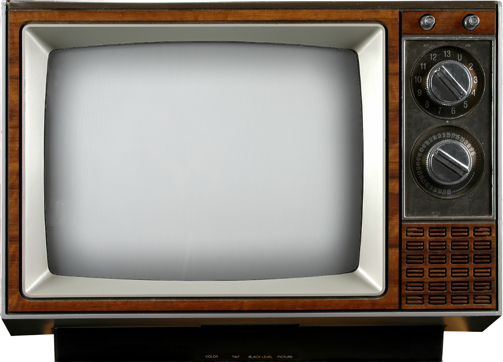
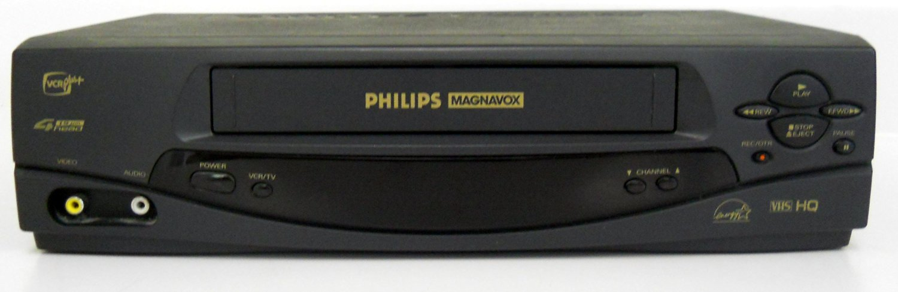

Durante gran parte del siglo XX, ver imágenes en movimiento fue una experiencia ligada a aparatos grandes y espacios fijos. El televisor reunió transmisión, pantalla y sonido en el hogar, convirtiéndose en el centro de la vida audiovisual doméstica. Su lógica era lineal: alguien emitía y millones de personas miraban al mismo tiempo.

La siguiente gran transformación llegó con las videocaseteras y las cámaras de video portátiles. El usuario ya no solo consumía contenidos: también podía grabar cumpleaños, viajes o eventos familiares, rebobinar escenas y elegir cuándo ver una película. El video empezó a separarse del horario fijo de la televisión y se volvió un archivo manipulable.

Más tarde, el video se digitalizó. Cintas, discos y reproductores específicos fueron reemplazados por archivos comprimidos, plataformas en línea y transmisión bajo demanda. La pantalla dejó de depender de un mueble en el living y empezó a migrar a notebooks, tablets y finalmente celulares.
Hoy, el teléfono concentra funciones que antes requerían televisor, videocasetera, filmadora y computadora. Desde un solo dispositivo podemos grabar, editar, compartir, transmitir en vivo y mirar contenido en cualquier momento. Esta convergencia convirtió al celular en una pantalla personal permanente y en una cámara de video siempre disponible.